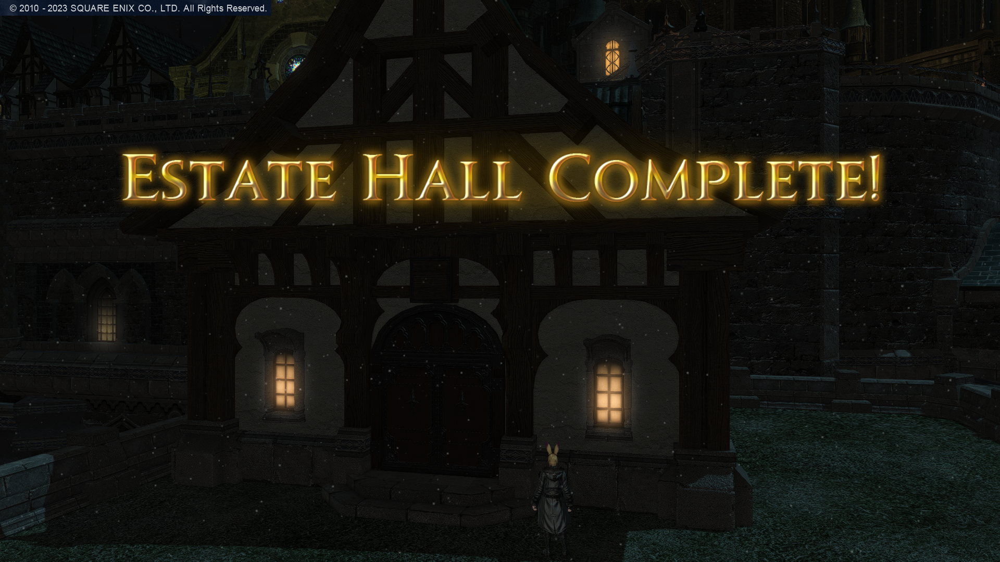
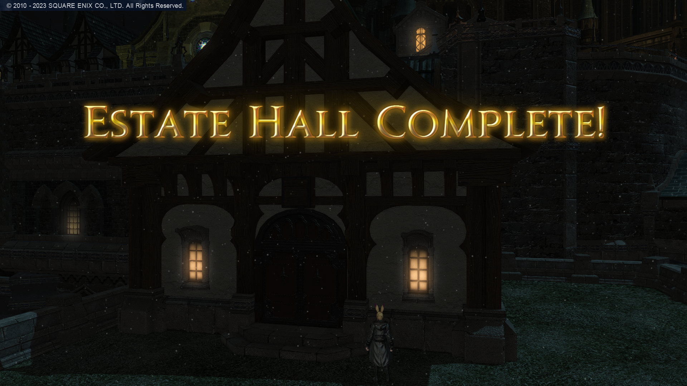

Uma das atividades que mais gosto de fazer atualmente é decoração da minha casa. Já tive uma mais simples,uma no estilo oriental e, por último, mudei de cidade e construí um café-bar. Gastei todo meu gil, porém fiquei muito satisfeito com o resultado final.
A seguir, apresentarei uma série de imagens que fiz desde quando adquiri o terreno.
 


Assim como todos, eu gosto de uma boa festa. Já fui a festas juninas, participei de sorteio do Jumbo Cactpot (a Mega-Sena de Eorzea), só não fui à casamento (ainda). A última empreitada é fazer a festa dos Loporrits, como vocês podem ver, na imagem abaixo, a festa inicial.